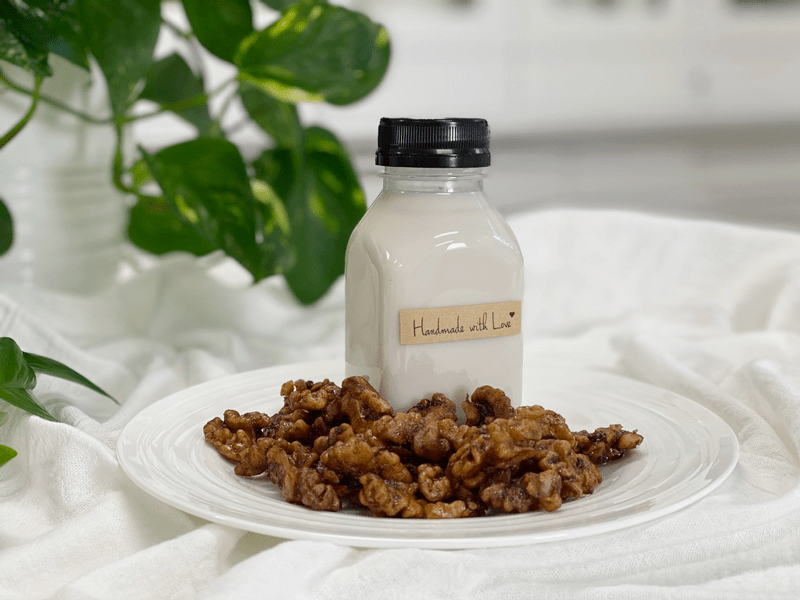
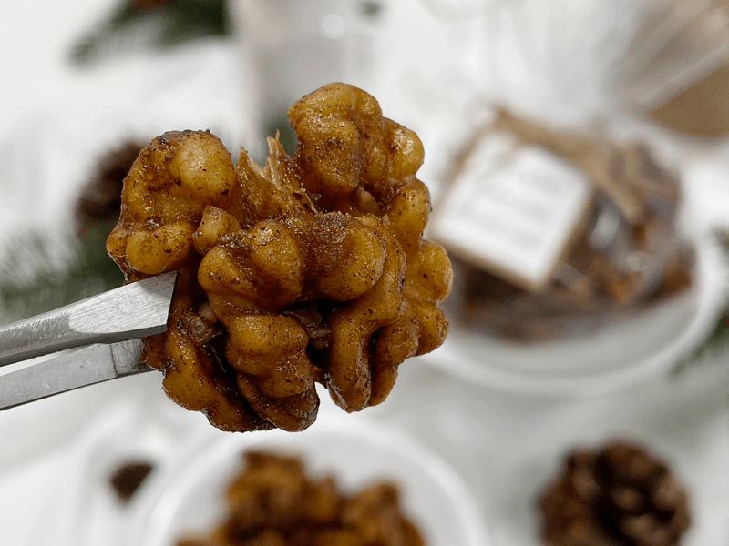

As a whole food culinary educator and recipe developer, I am deeply committed to the power of nutrition, meeting the pleasure of eating. Let’s be clear. I am a food lover first. And what follows as a not-too-distant second, is my fascination with how our bodies respond to food. And more specifically, my fascination with the way that the food we eat can influence health.

Some say that digestion starts in the mouth when the food begins to mix with saliva. Whereas this is true, I believe that it begins before the food even enters our mouth. Our PERCEPTION of what we eat will significantly affect how our body processes and absorbs the nutrients. If you eat when stressed, emotional, or under distress… your digestion will take a hit regardless of how pure the food is that you are eating. Our brain interprets what we are going through at the very moment we eat, which I honestly believe alters the function of our digestion but also our taste buds.
Our experience with food is affected not only by our current emotional state, but also by a food’s temperature, smell, texture, even our past experiences with the food, and how our brain interprets all of this information. Our food preferences are rooted in what is familiar: what we grew up eating, what our environment offered, and what we learned looking around at “others’” plates. And, let’s face it, what our taste buds prefer to eat profoundly influences our health.

Taste Bud Hacker
I want to think of myself as a “tastebud hacker!” meaning that I plan to create recipes to get your taste buds excited, to make your food memorable, and let’s never forget – nutritious. When we eat processed junk food, it can please our taste buds but often leave us feeling “hungrier still.” Think about it, have you ever sat down with a bag of potato chips, and when the bag was empty, it left you craving for more? It is my opinion that it happens because our bodies are not satiated enough with nutrients. I hear people talk about “empty calories,” but I think it all boils down to “empty nutrients.”
These Pumpkin Pie Spiced Walnuts are sure to satiate you. They will fill your tummy with a wholesome yumminess, and it will charge your nutrition batteries. I realize that I use coconut sugar in this recipe, but I want you to keep the following in mind… Walnuts and olive oil are healthy fats that will signal your brain that it is content, happy, and will leave you feeling full quicker. The coconut sugar can be replaced with Stevia or Markus Sweet if you wish to reduce your sugar intake. The end flavor will be slightly different from what I created, but your insulin levels may be happier with you. And I guess I must state the obvious… these spiced nuts are a treat, a snack, and are meant to be enjoyed in moderation.
Well, let’s get our aprons on, dirty some dishes, and create some delicious and nutritious foods! Many blessings, amie sue
 Ingredients
Ingredients
- 4 cups walnuts, soaked
- 3-4 Tbsp Extra-Virgin Olive Oil
- 1 Tbsp pumpkin pie spice
- 1/2 tsp sea salt
- 1/8 tsp stevia (or 1/4 cup coconut sugar)